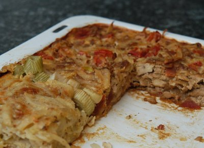

| Zutaten für 6 Personen: | |
| 1 | Betty Bossi Hochrand Backblech, 33 x 30 x 3 cm |
| 800g - 1kg | rohe Kartoffeln (Urgenta, Sirtema, Palma, Agria) |
| Variante 1: Tofu-Rösti | |
| 100 g | Tofu, grob gerieben |
| 2 El | Sojasauce, mischen und 30 Minuten stehen lassen |
| 1 grosse | Tomate, in Würfeln |
| Variante 2: Emmentaler Rösti | |
| 100 g | Emmentaler |
| 1 Bund | Petersilie |
| einige | Salbeiblätter, in Streifen |
| Variante 3: Appenzeller Rösti | |
| 50 g | Appenzeller |
| 1 kleiner | Lauch oder |
| 2 | Frühlingszwiebeln mit Kraut, in feinen Streifen |
| 1 El | Haselnüsse, gehackt |
| Variante 4: Zwiebelrösti | |
| 1 | Zwiebel, grob gehackt |
| 50 g | Speckwürfeli oder Wursträdli |
| 1 Messerspitze | Rosmarinpulver |
| 2 El | geriebener Sbrinz |
| Guss: | |
| 4 dl | Milch |
| 1 Becher | Joghurt nature |
| 4 | Eier |
| 1 1/4 Tl | Salz |
| Pfeffer aus der Mühle | |
| 1 Messerspitze | Muskat |
| 1 Tl | Paprika |
| 3 | Knoblauchzehen gepresst |
| nach belieben | geriebener Käse |
Die Kartoffeln schälen und an der Röstiraffel reiben.
In 4 Portionen teilen. Die Kartoffeln mit den Zutaten mischen und jeweils auf das Blech verteilen.
Der Guss entsteht durch Vermengen aller Zutaten mit dem Schwingbesen. Der Guss wird über die Rösti verteilt.
Um zu verhindern, dass die Rösti sofort austrocknet, wird sie mit Alufolie oder einem Blech bedeckt und dann im 180°C vorgeheizten Ofen 20 Minuten gebacken. Dann wird die Folie entfernt und die Rösti nochmals 40-45 Minuten weiter gebacken. Die Gesamtbackzeit beträt ca. 60 Minuten.
Das Betty Bossi Rezept macht auf dem gleichen Blech vier Sorten Rösti und mischt jeweils einen Teil der Beigaben zu den Kartoffeln und verteilt die Portion dann in eine Ecke des Blechs. Ich habe erfolgreich einfach ein bisschen mehr Käse und Speckwürfeli und so gekauft und das dann alles gleichmässig vermischt und auf das Blech verteilt.
Betty Bossi, Preisgünstig, raffiniert kochen, Seite 15
Wurde von RE mehrmals erfolgreich gekocht.
Für das Foto am 5.7.2009 zubereitet. Das Appenzeller-Eck war etwas blass. Sehr gut hat die Zwiebel/Speckwürfeli Ecke gemundet. Emmentaler und Tofu war ganz OK. Leider habe ich vergessen das Bild zu schiessen, deshalb bloss ein Bild von den Resten. RE